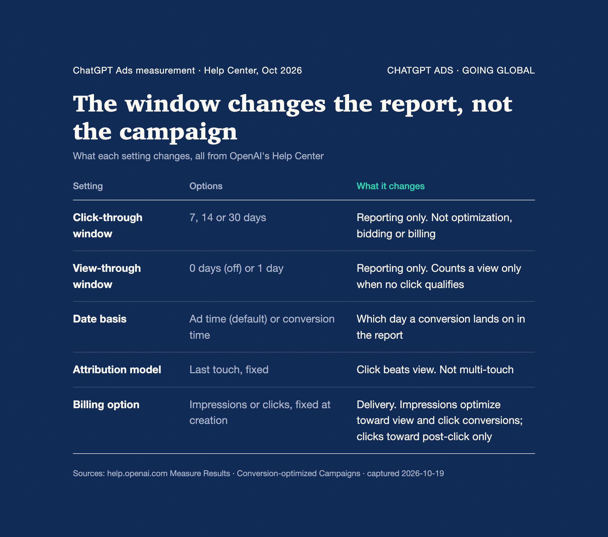
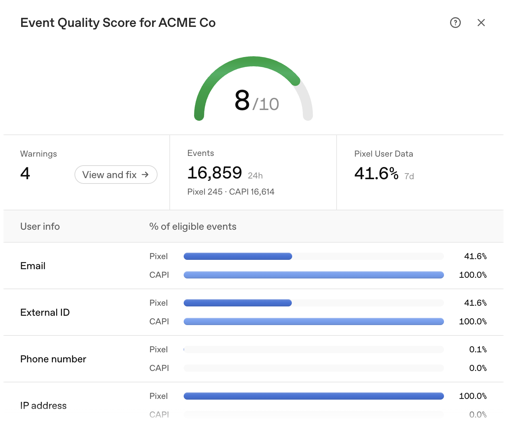

In ChatGPT Ads Manager, the attribution window (7, 14 or 30 days after a click, plus an optional one-day view-through window) changes only what reports count. It does not change optimization, bidding or billing. The billing option shapes delivery. The Event Quality Score is a daily check of your conversion data, not a forecast.
TL;DR
This page follows the October 5, 2026 update explainer, which named the attribution window and EQS without explaining them. Between October 2 and October 17, OpenAI updated five Help Center pages on ChatGPT Ads measurement. Every fact below comes from those pages or from the OpenAI Ads Blog, linked where used.
The Help Center page “Measure Results” lists the settings that decide what appears in the Conversions column. The billing option, from “Conversion-optimized Campaigns”, is added because it is the one that changes delivery.
| Setting | Options | What it changes |
|---|---|---|
| Click-through window | 7, 14 or 30 days | Reporting only |
| View-through window | 0 days (off) or 1 day | Reporting only. Counts a view only when no click qualifies |
| Date basis | Ad time (default) or conversion time | Which day a conversion is reported on |
| Attribution model | Last touch, fixed | A click beats a view. Not multi-touch |
| Billing option | Impressions or clicks, fixed after creation | Delivery: what the campaign optimizes toward |
Sources: Measure Results (updated about 2026-10-17) and Conversion-optimized Campaigns (about 2026-10-02), captured 2026-10-19.

A click-through window counts conversions that happen within 7, 14 or 30 days of an ad click. A one-day view-through window adds conversions within a day of an ad impression, but only when no click qualifies. With view-through at zero, the total is clicks only. The setting applies to every conversion column in the report and sits under Edit columns, Conversion Events, Attribution windows.
OpenAI states that the feature “uses OpenAI’s existing last-touch attribution logic and is not multi-touch attribution.” When a view and a click both qualify for one conversion, the click takes the credit.
By default a conversion is dated to the click or impression that earned it. Choosing “Conversions (by conv. time)” in Edit columns dates it to the day the conversion happened instead. This matters most when you compare Ads Manager with a CRM.
No. Measure Results says so in one sentence:
“Changing the reporting window affects reporting only; it does not change campaign optimization, bidding, or billing.”
— OpenAI Help Center, “Measure Results”, captured 2026-10-19
A 30-day window will show more conversions than a 7-day window on the same campaign, because it counts further back. A jump after a window change is a settings effect, not a performance change.
For conversion-optimized campaigns, delivery follows billing. Impression billing charges for impressions and optimizes toward conversions driven by ad views and clicks. Click billing charges for valid clicks and optimizes toward conversions after a click. OpenAI's own summary is “Selecting Clicks will lower your conversions.” Read that as OpenAI's view of its system, to be tested in your account.
A common path is to ask ChatGPT about a product, leave, and buy later through search or a direct visit. Click-only reporting misses it. The OpenAI Ads Blog gave one figure on October 5, 2026: in an early analysis of global campaigns optimized for deeper-funnel outcomes, 52.7% of eligible one-day view-through conversions occurred within an hour of the matched ad impression. That describes OpenAI's sample, not any one account.
| Metric | Typical delay |
|---|---|
| Impressions and clicks | About every 15 minutes |
| Spend | About 7–8 hours behind; clicks can appear before their cost |
| Attributed conversions | About 24–48 hours; recent totals can still change |
Source: Measure Results, captured 2026-10-19.
EQS is a per-data-source check of the conversion information you send, set out on “Understand and improve event quality”. Each pixel or data source gets its own score, shown out of 10 in OpenAI's example, with warnings, recent event volume and identifier coverage.

The troubleshooting page asks exactly this, and answers: “Not by itself.” Check that recent real actions are recorded, then work through the warnings. OpenAI also says not to send extra events, invent identifiers or change event times to raise the score.
| Warning (OpenAI's name) | Fix group |
|---|---|
| Limited email or customer ID information | Identifiers |
| Limited additional matching information | Identifiers |
| Ad click information is missing or cannot be connected | Click parameter (oppref) |
| Conversions API events are delayed | Timing |
| Conversion matches need review | Dedup and coverage |
| Many conversions are linked to the same ad interaction | Dedup and coverage |
| Limited event types observed | Dedup and coverage |
| Limited Pixel and Conversions API activity | Dedup and coverage |
| Limited activity for a configured conversion goal | Dedup and coverage |
Warning names from “Understand and improve event quality”, captured 2026-10-19. The four fix groups are my grouping.
The Conversions API accepts an event only if it is “within the last 7 days and no more than 10 minutes in the future.” OpenAI adds: “This submission limit is separate from the attribution window.” A 30-day window does not let you upload a 20-day-old order.
The “Conversion Measurement” page says: “A difference does not necessarily indicate an error.” Align five things before comparing:
| Align | Why |
|---|---|
| Click and view windows | A one-day view window adds conversions a click-only tool will not show |
| Date basis | Ads Manager dates to the ad interaction by default; a CRM dates to the order |
| Time zone and date range | Day boundaries shift totals |
| Event | Order Created Sales and ROAS use only order_created events |
| Scope | Imported Google Analytics 4 totals include all traffic sources and are not attributed conversions |
Teams that also use a mobile or web attribution partner should set the ChatGPT Ads window to match that partner's window, so both tools apply the same rule.
A 7-, 14- or 30-day click-through window, and a view-through window of 0 days (off) or 1 day. Any combination works. The setting applies to every conversion column in the report.
No. OpenAI says the window affects reporting only, not optimization, bidding or billing. Delivery is shaped by the billing option. Impression billing optimizes toward view and click conversions. Click billing optimizes toward post-click conversions.
No. It is last-touch. If both a click and a view qualify for the same conversion, the click gets the credit.
A per-data-source check of the conversion information you send, shown out of 10, refreshed daily over seven complete days. It lists warnings to fix. It does not forecast campaign results.
Not by itself, according to OpenAI. Check that recent real actions are captured, then work through the warnings. Do not send extra events or invented identifiers to raise the score.
About 24 to 48 hours, and recent totals can still change. Impressions and clicks refresh about every 15 minutes. Spend lags about 7 to 8 hours.
Stan Lu · ChatGPT Ads · Going Global. I write explainers on official ChatGPT Ads updates, with sources split into OpenAI, coverage, and my own reading.
Series: ChatGPT Ads Update Explainer · Previous: October 5, 2026 update · 中文版
Published 2026-10-22 · Last updated: 2026-10-22